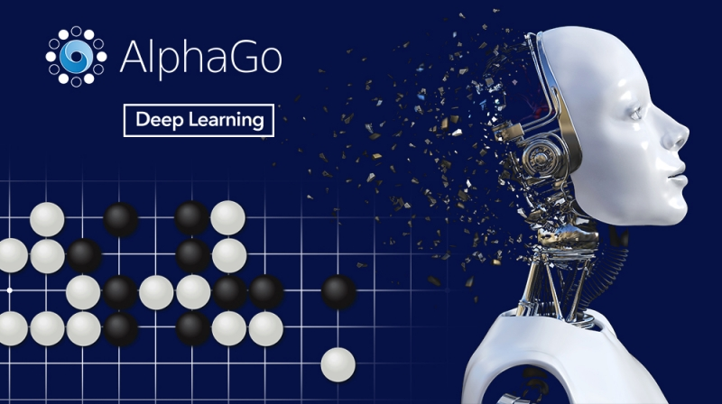

인공지능 사용 사례
인공지능 사례
AI는 금융 서비스 사기 탐지, 소매업의 구매 예측, 온라인 고객 지원 상호 작용과 같은 일상적인 시나리오에서 응용되고 있습니다. 다음은 몇 가지 예입니다.

- 사기 탐지
금융 서비스 업계에서는 두 가지 방법으로 인공 지능을 사용합니다. 신용 대출 신청의 초기 점수를
산정할 때 AI를 사용하여 신용도를 파악합니다. 보다 발전된 AI 엔진은 사기성 결제 카드 거래를
실시간으로 모니터링하고 탐지하는 데 사용됩니다.
- 가상 고객 지원(VCA)
콜 센터에서는 VCA를 사용하여 인간 상호 작용의 범위 밖에서 고객의 문의를 예측하고 이에 응답
합니다. 음성 인식은 시뮬레이션된 인간 대화와 함께 고객 서비스 문의의 첫 번째 상호 작용 지점
으로 사용됩니다. 상위 수 준 문의는 직원에게 리디렉션됩니다.
- 챗봇
웹 페이지에서 채팅(챗봇)을 통해 대화를 시작하는 경우 전문 AI를 실행하는 컴퓨터와 상호 작용
하는 경우가 많습니다. 챗봇이 해석하거나 해결할 수 없는 문제에는 직원이 개입하여 사람과 직접
의사소통하게 됩니다. 이와 같이 해석되지 않은 사례는 머신 러닝 컴퓨팅 시스템에 입력되어 향후 상호
작용에 대한 AI 애플리케이션을 개선합니다.
1
2
3